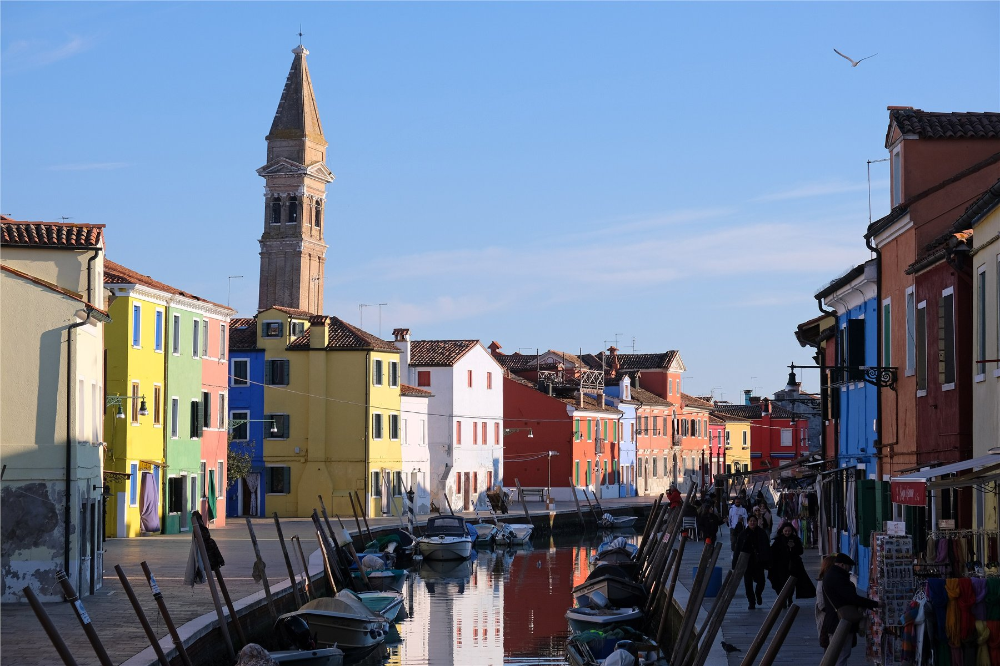

没有一位建筑师，也没有一份统一的色卡，布拉诺却拼出了全世界最经得起放大看的一条彩色运河——每一栋屋子归属不同的人家，却在几百年间被同一套不成文的规矩管束着：想换颜色，得先向当地政府报批，而且不能撞上隔壁那家祖传的色号。结果是一整条街，浓烈得像打翻的糖果盒，却诡异地和谐——这背后，其实是一套比想象中严谨得多的色彩秩序。
运河是这张照片最诚实的引导线：两岸屋墙笔直地把视线夹向画面深处，最终撞上那座明显倾斜的圣马丁教堂钟楼——它不偏不倚落在画面右侧三分线附近，用一点点"歪"打破了运河笔直带来的规整感，成为整张照片唯一的动态焦点。
前景一排排系船的木桩（briccole）以近乎等距的节奏刺出水面，像五线谱上的音符，把视线一节节送向远方，也把原本空荡的水面切割出有呼吸感的前后层次。
平静的运河把两岸建筑完整地复刻成一面倒影，色彩因此被"用了两次"——整条街在画面下半部又被温柔地晕开、拉长，构图因此多了一条隐藏的对称轴。
每一栋房子被漆成与邻居截然不同、但饱和度相近的颜色——柠檬黄贴着钴蓝，鼠尾草绿挨着珊瑚粉——这正是谢弗勒尔"同时对比"定律的活教材：两种强对比色紧挨在一起时，会互相把对方的饱和度"借"得更高，柠檬黄旁边的蓝会显得比它单独存在时更蓝、更冷。
但整条街并不闹，因为所有颜色都被压在同一个中等明度的区间里，屋顶统一的赤陶橙、门窗统一的雪白木框，像乐谱里反复出现的同一个和弦，把满街的高饱和色安全地"框"在了一套秩序里，不至于杂乱刺眼。
照片拍摄于12月一个晴朗傍晚（摄影师记录的时间是2024年12月11日），低角度的冬日暖阳斜斜扫过屋墙，把本就浓烈的色块又镀上一层金橙色调，同时在墙面转角处拉出成片的蓝紫色阴影——暖墙冷影，恰好又是一组互补色的天然对照。
布拉诺的房子从来不是"随便刷刷"：岛上的居民世代要向当地政府申请获批之后才能给自家外墙上色，而且不少屋子的颜色是被历史记录"锁定"的——换句话说，你现在看到的每一面墙，颜色配方可能已经在同一块地基上，被刷了几百年。
这座醒目倾斜的钟楼属于圣马丁教堂，倾斜早在几个世纪前就已存在（地基是威尼斯潟湖典型的松软淤泥），如今已成了布拉诺自己的"比萨斜塔"，也是这条运河尽头唯一挺立的地标。
最广为流传的说法是：布拉诺的渔民常年要在潟湖大雾里划船回家，妻子们把自家外墙漆成一眼就能认出的颜色，好让丈夫在浓雾里循着色块摸回自己的门——一个纯粹为了"生存需要"而诞生的办法，几百年后活成了全世界最上镜的街道。
最打动人的，或许不是颜色本身，而是这份"美"从来不是设计出来给人看的：画面里散步的行人、系在门口的船、晾在窗边的一角布——这条运河至今仍是有人在里面生活、系船、买菜的真实街道，绚烂只是这些普通日子的副产品。
布拉诺（Burano）是威尼斯潟湖里的一座小渔岛，距离主岛威尼斯约7公里，自16世纪起就以精细的"布拉诺针绣花边"（merletto di Burano）闻名欧洲宫廷，岛上至今仍有一座花边博物馆。渔业与花边，才是这座岛屿真正的历史主线，色彩斑斓的房子，最初不过是渔民生活里再朴素不过的实用设计。
这张照片的拍摄者Kallerna是Wikimedia Commons上一位相当高产的芬兰摄影师志愿者，长期在全球各地拍摄地标建筑与城市风光，并以知识共享协议公开授权。这张摄于Tre Ponti桥头、望向Rio Giudecca运河的照片，已被Commons收录为"优质图片"（Quality Image）。